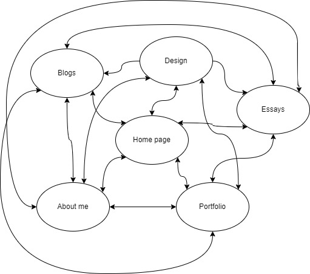

This is not the first time I have come up against Git. Last year in our game dev course we were told to use GitHub to back up all our work. This is where learnt just how painful Git can be. During my first experience with Git, I spent much longer than I would like to admit watching videos on how git works and how to set up a Git repository. Once it was all setup, I could push changes and see my wonderful work updated on github. I was so confident in my git skills, but this confidence was extremely premature. I encountered this really scary monster called a commit error. This is when you confuse git by pushing changes that don’t match with files on the repository, so git decides that is will not work until you fix the mistake. This error is terrifying and takes a lot of googling to solve. So, after defeating my commit errors I should be a git pro… right?
This week was my first time using GitHub for html and publishing a website. Setting up the repository was straightforward. It was the same process that I was used to. I was intimidated by the idea of publishing my website. I thought it was something that would be extremely difficult. However, this step was really easy. Having the setup be this simple help calm some anxiety I have about the difficulty of this course and got me really excited to do more.
In this course I am excited to learn the fundamentals. We were told that this course would not teach us the fancy stuff, but the right stuff. I am confident that I will leave this course with the strong base knowledge to tackle any problem I face.
Week 2
The Wireframes
Inspiration
synchrodogs.com - I really like the colours of this website. The navigation bar at the top of the screen is something I want to replicate.
gerlogu.com - This website is a great example of a clean website. The information is presented to the user well.
Home page wireframeAbout page wireframeBlog page wireframePortfolio page wireframe
Week 3
Semantic Markup
Semantic markup seems quite daunting, but I am learning that it is something I have to get used to and it does not have to be scary. Semantic markup is essential the agreed upon structure and format of html code.
When coding anything, it is advised to keep your code structure logical and easy understandable. This is essence of what semantic markup is, but there are more real-world effects that the structure of your html has.
Why does semantic markup matter:
Accessibility: Visually impaired users interact with your website through a screen reader. These assistive technologies look at the html code itself to read the contents of the website. The screen reader will look at certain sections of the html, such as <nav>, <main>, <header>, etc., to effectively describe the information of the page to the user. Making use of semantic markup accommodates to the needs of this population.
Search Engine Optimization (SEO): This is the act of making your website rank higher on search results on search engines. Search engine rank website that uses semantic markup more highly because structuring your content with the right tags allows the engine to know what content is on your page and can recommend it to potential users.
Readability: The right structure allows the website to be understood more easily in the future. This will make maintaining the website easier.
Tags I have learnt
<nav>: Contains the website navigation
<header>: Contains the heading of the page
<footer>: Contains the copyright and contact information
<main>: Contains the main content of the page (the meat and potatoes)
<article>: Used for contents that can standalone and makes sense on its own
<section>: For information that cannot standalone and need context
Week 4
IxD Process
My goals for the website
The goal of this website is to serve as my professional portfolio where prospective employers can learn about the past work I have done. I want the user to see a professional and clean website. The website should show the full range of my skills and the quality of my work.
Users
Target audience: Potential employers and peers.
Why: To find information about me and means to contact me.
Information/Content
The content on the website will include my professional information and some personal information. A weekly blog will be available on the website that details my thoughts as I make my journey through website development. An “about me” page will have background information about me with my education, past experiences, and some fun facts. My professional works and projects, such as my GitHub, will be available for the user to find and view. My contact information will be easily accessible through the website for the user to find.
The most important information is the contact information; thus, it will be the most easily accessible from any page of the website.
The most interesting information is the about me content and my professional works. This information should be presented first to the user to hold their attention
Information StructureUserflow

Reflection on Website 1
Struggles
The most challenging part of designing a website was the semantic markup. I want to follow all the rules at the beginning of my web development so that they become good habits. I spent a lot of time learning the tags and where they should be used. I still feel like I have a lot more to learn about tags.
What I am proud of
I am proud of what I was able to learn, in html and in how the user interacts with the web.
What do I want to change moving forward
I am excite to leatn how to automate my website. I wanting to learn javascript so that I can see how far I can take web development.